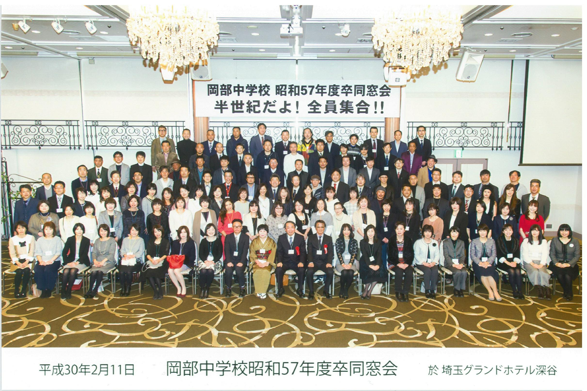

岡部中学校
昭和57年度
(1982年度)
卒業生同窓会
深谷市立 (旧・岡部町立) 岡部中学校 (地元での通称は「岡中」)の昭和57年度(1982年度)の卒業生の同窓会のページです。
深谷市立 (旧・岡部町立) 岡部中学校 (地元での通称は「岡中」)の昭和57年度(1982年度)の卒業生の同窓会のページです。
平成30年(2018年) 2月11日に岡部中学校昭和57年度卒業生の同窓会「半世紀だよ！全員集合！！」を開催しました。
今回、参加できなかったみなさんも、是非、次の機会にはご参加ください！

平成30年2月11日の同窓会の集金収支余りは163,674円となりました。
これを深谷市立岡部中学校教育振興会に、岡部中学校教育振興会協賛金としてお渡ししました。木本幹男会長から、感謝の意と岡部中学校のますますの発展に活用させていただきます！と心強いメッセージをいただきました。明日の未来を築く子どもたちや地域が、よき方向へ導かれることを願います。
「OKB57」という岡部中学校昭和57年度卒業生の同窓会のLINEグループがあります。
同窓会の幹事をご存知であれば、その人と友達になって、招待してもらってください。
「岡部中学校５７年度卒」という岡部中学校昭和57年度卒業生の同窓会のグループがあります。
次のいずれかのお知り合いを探して、コンタクトしてみてください。友達申請するときは、必ずメッセージを添えてください。
「齋藤 大天」、「長谷川 秋男」、「吉田 実」、「根岸 幸恵 (旧姓・島田)」、「吉田 文子 (旧姓・酒井)」
岡部中学校昭和57年度卒業生は、体操服の学年カラーは青でした！ このページのヘッダーやフッターはそれをイメージしたものになっています。
1年下は緑、2年下はエンジでした。
フォークランド紛争、CDプレイヤー発売、あみん「待つわ」、映画「E.T.」「セーラー服と機関銃」、TVアニメ「超時空要塞マクロス」「パタリロ！」、日本シリーズは中日ドラゴンズ対西武ライオンズで西武ライオンズ優勝。
また、在学中は「ザ・ベストテン」などの音楽番組、「8時だョ!全員集合」「オレたちひょうきん族」などのお笑い番組、「シャネルズ」などの音楽グループが人気でした。